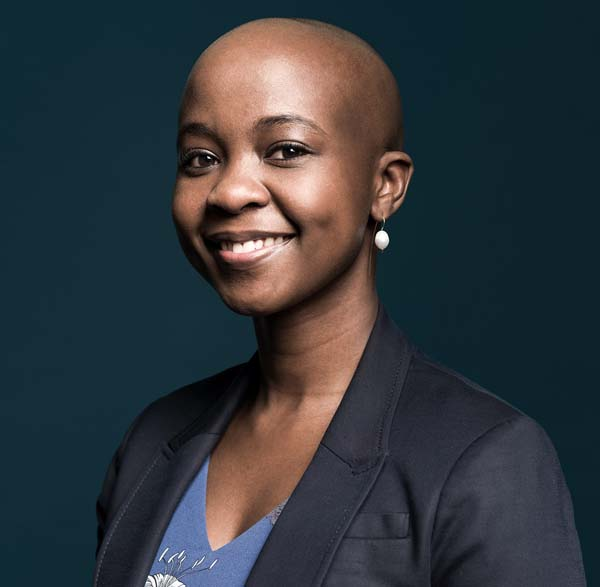
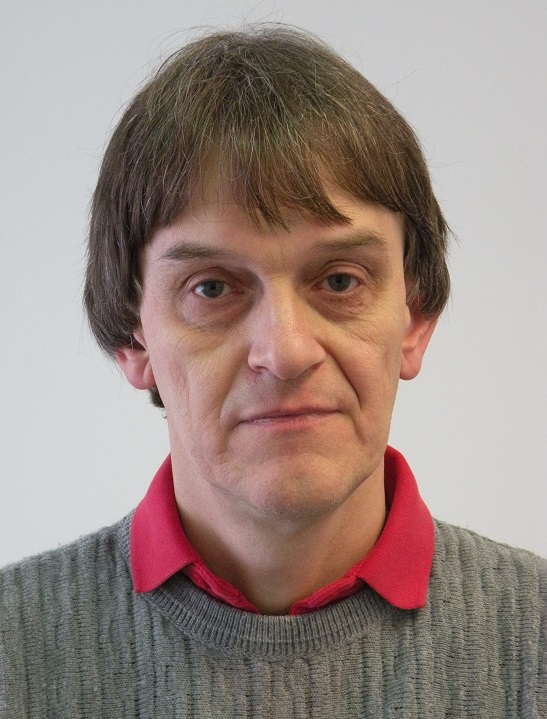

Keynote Speakers
-
Chris Wild is a recently retired Professor of Statistics from the University of Auckland in New Zealand where he taught for 43 years. Currently, his main research interests are in statistics education with particular emphasis on visualisation, software for data analysis and conceptual development, statistical thinking and reasoning processes. Much of his career was spent in developing methods for modelling response-selective data (e.g. case-control studies) and missing data problems, and other aspects of biostatistics. He is probably best known in statistics education for his 1999 ISR paper “Statistical thinking in empirical enquiry” with long-term collaborator Maxine Pfannkuch. He is a Fellow of the American Statistical Association and of the Royal Society of New Zealand. He has been a Council member of the International Statistical Institute (2005-2009), President of the International Association for Statistics Education (IASE, 2003-2005), an Editor of the International Statistical Review, an Associate Editor of Biometrics, the Statistics Education Research Journal (SERJ), and the Australian and New Zealand Journal of Statistics. He was Head of Auckland's Department of Statistics 2003-2007 and co-led the University of Auckland's first-year statistics teaching team to a national teaching award in 2003.
- 
Shingai Manjengwa is the Director of Professional Development at the Vector Institute for Artificial Intelligence in Toronto, where she translates advanced AI research into educational programming to drive responsible AI adoption and innovation in industry. Shingai serves on the board of the Canada Institute on Governance (IOG) and the advisory council for, “Accelerating the adoption of AI in healthcare,” a program by the Michener Institute of Education at UHN and the Vector Institute to empower front-line healthcare workers with AI skills. She also serves on the Service Advisory Committee (SAC), a group of external experts who provide guidance to the Senior Associate Deputy Minister of Employment and Social Development Canada (ESDC) and Chief Operating Officer for Service Canada, with a view to improving the delivery of ESDC programs and services to Canadians and businesses. A data scientist by profession, Shingai holds a master’s degree in Business Analytics from New York University’s Stern School of Business and she is also the Founder and CEO of data science education company, Fireside Analytics, which develops customized data science education programs. Courses developed by Shingai have over 500,000 registered learners on platforms like IBM’s CognitiveClass.ai and Coursera. Her book, ‘The Computer and the Cancelled Music Lessons,’ teaches data science to kids from ages 5 to 12 and she is the 2020 recipient of the Public Policy Forum, ‘Emerging Leader’ award.
- 
Jürgen Symanzik is a Professor at Utah State University's Department of Mathematics and Statistics. Dr. Symanzik holds a Ph.D. degree with a co-major in Statistics and Computer Science from Iowa State University, Ames, Iowa, USA, and two M.S. degrees in Computer Science and in Statistics from the University of Dortmund, Germany. He is an Elected Member of the International Statistical Institute (ISI) and a Fellow of the American Statistical Association (ASA). Dr. Symanzik is the Past President of the International Association for Statistical Computing (IASC) [2021-2023]. He was the 2018 Chair of the ASA Section on Statistical Computing and the 2011 Chair of the ASA Section on Statistical Graphics. From 2015 to 2018, he served as Editor-in-Chief for Springer’s Computational Statistics journal. In February 2023, he started as a Commissioning Editor for Wiley’s WIREs Computational Statistics (topic suggestions for review and overview articles that are related to statistics & data science education and computational statistics are highly welcome). Dr. Symanzik’s research interests include dynamic statistical graphics, micromaps, visual data mining & exploratory (spatial) data analysis, and applications of statistical computing and statistical graphics to natural resources, education/teaching, medical research, and eye-tracking research.
Schedule
Follow the links for details on keynote talks and the panel discussion.
| |
TUESDAY, JULY 11 |
WEDNESDAY, JULY 12 |
THURSDAY, JULY 13 |
| 8:30-9:00AM |
Registration &
Welcome Remarks |
|
|
| 9:00-9:30AM |
Poster Session |
| 9:30-10:00AM |
Keynote:
Chris Wild |
Keynote:
Shingai Manjengwa |
| 10:00-10:30AM |
| 10:30-11:00AM |
Coffee Break |
Coffee Break |
Coffee Break |
| 11:00-11:30AM |
Parallel Sessions (x3) |
Parallel Sessions (x3) |
Parallel Sessions (x3) |
| 11:30-12:00PM |
| 12:00-12:30PM |
| 12:30-1:00PM |
Lunch |
Lunch |
Lunch |
| 1:00-1:30PM |
| 1:30-2:00PM |
| 2:00-2:30PM |
Parallel Sessions (x3) |
Parallel Sessions (x3) |
Closing Session |
| 2:30-3:00PM |
| 3:00-3:30PM |
|
| 3:30-4:00PM |
Coffee Break |
Coffee Break |
| 4:00-4:30PM |
Keynote:
Jürgen Symanzik |
Panel Discussion |
| 4:30-5:00PM |
| 5:00-5:30PM |
Poster Session |
| 5:30-6:00PM |
|
| 6:00-6:30PM |
| 6:30-7:00PM |
Reception |
| 7:00-7:30PM |
| 7:30-8:00PM |
| 8:00-8:30PM |
Notes:
- All times are EDT (local Toronto time).
- Keynotes, parallel & poster sessions, and the panel discussion will take place both in-person at the venue and online through Whova.
- Coffee breaks, lunches, and the reception are in-person only.
Program
The scientific program sessions includes over 40 presentations and 30 posters. The detailed program will be provided here once it is finalized.
|
|
|